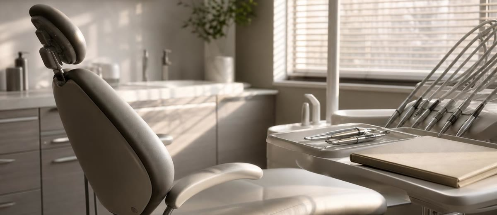

El presupuesto dental no se pierde por precio: se pierde por seguimiento

El paciente no siempre se va porque le parezcas caro.
A veces se va porque dijo que sí, salió por la puerta, volvió a su vida y nadie de la clínica apareció en el momento adecuado.
Ese es uno de los agujeros más discretos de muchas clínicas dentales: el presupuesto está hecho, el paciente parece convencido, la recepción lo apunta en el sistema y todos sienten que el trabajo comercial está casi terminado.
Pero no está terminado.
El sí del paciente tiene temperatura
Cuando un paciente acepta mentalmente un tratamiento, hay una ventana corta en la que todavía recuerda el problema, entiende la urgencia y tiene fresca la confianza que se generó en consulta.
Si la clínica tarda dos semanas en hacer seguimiento, todavía hay posibilidad de recuperar la conversación. Si tarda un mes, el paciente ya ha mezclado esa decisión con gastos, dudas, familia, trabajo y otras prioridades. Si pasan tres meses, aquel "lo voy a hacer" se convierte en "ya veré".
La venta no se pierde siempre en el presupuesto. Muchas veces se pierde en el silencio posterior.
El error no es humano: es de sistema
Conviene decirlo claro: esto no suele pasar porque recepción sea vaga, porque el doctor no se implique o porque el paciente sea informal.
Pasa porque la clínica no tiene un sistema sencillo para decidir quién llama, cuándo llama, qué dice, qué registra y cuál es el siguiente paso.
Cuando el seguimiento depende de acordarse, el resultado depende del día. Si la agenda va llena, se olvida. Si entra una urgencia, se retrasa. Si la persona responsable libra, se queda parado. Y si nadie pregunta por ese presupuesto, parece que no ha pasado nada.
Qué debería quedar definido en una clínica
No hace falta montar una maquinaria complicada. Hace falta disciplina comercial básica.
- Primer contacto rápido: llamar o escribir en las primeras 24-48 horas si el paciente no ha cerrado cita.
- Motivo registrado: diferenciar entre duda económica, miedo al tratamiento, falta de tiempo, consulta familiar o simple indecisión.
- Siguiente acción con fecha: no dejar el presupuesto como "pendiente"; dejarlo con próxima llamada asignada.
- Mensaje útil: no perseguir al paciente, sino ayudarle a decidir con información clara.
- Revisión semanal: mirar presupuestos abiertos como se mira la agenda, porque también son producción futura.
La llamada no debería sonar a persecución
El seguimiento mal hecho incomoda. El seguimiento bien hecho tranquiliza.
No es lo mismo decir "te llamo para ver si aceptas el presupuesto" que decir "te llamo porque el doctor quería que no te quedaras con dudas antes de decidir".
La primera frase presiona. La segunda acompaña. Y en una clínica dental, donde el paciente mezcla salud, miedo, dinero y confianza, esa diferencia importa.
Lo que mira una clínica que gestiona de verdad
Una clínica que quiere crecer no solo mide llamadas, primeras visitas y facturación. También mide presupuestos entregados, presupuestos aceptados, presupuestos sin cita, días hasta el primer seguimiento y tratamientos reactivados.
Ahí aparece una lectura de negocio muy incómoda: quizá no necesitas más leads. Quizá necesitas dejar de enfriar los que ya tienes.
En Método EBA, este tipo de trabajo se mira como parte del sistema comercial de la clínica: captación, recepción, primera visita, presentación del plan, seguimiento y cierre. Si una pieza falla, la publicidad acaba pagando errores que no son de publicidad.
Cierre
Hacer el presupuesto es solo una parte del trabajo.
La clínica que deja ese sí en una carpeta está confiando en que el paciente se acuerde solo, venza sus dudas solo y vuelva solo. Algunos lo harán. Muchos no.
El seguimiento no es insistir más. Es cuidar mejor una decisión que el paciente todavía no ha terminado de tomar.